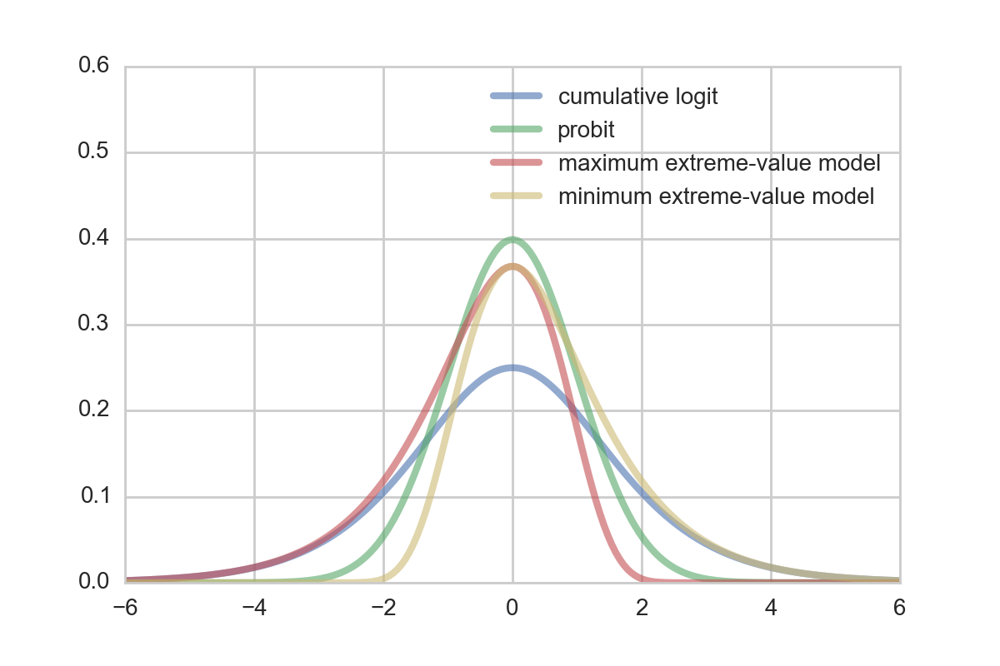
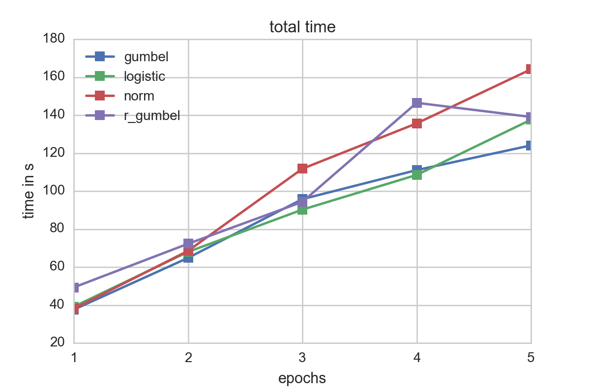
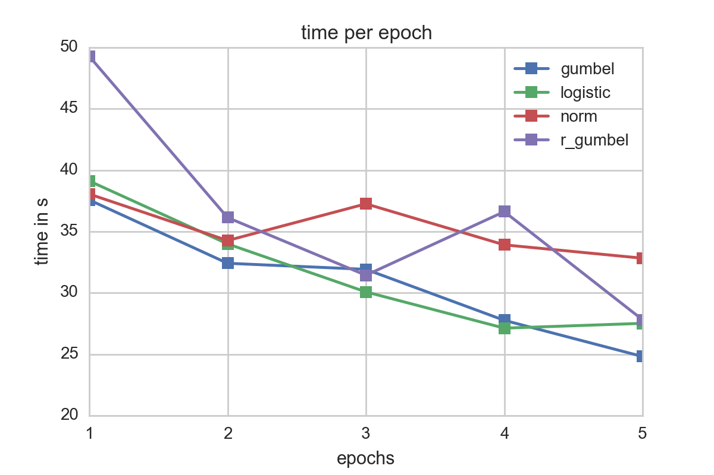
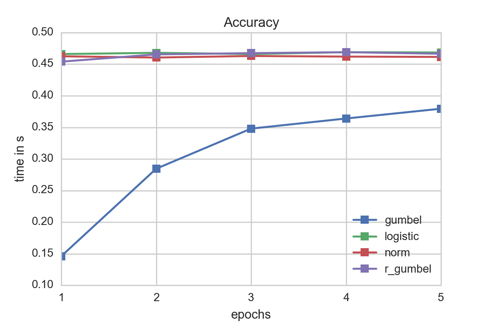

Ordinal Regression
In order to model categorical data, there are two possible approaches: multinomial logistic regression, and ordinal regression. Both of these models extend the popular binary logistic regression to include more than two variables.
In Multinomial logistic regression, the dependent variable $Y$ is modelled taking values in category $c = c_1, ..., c_C$ via $$ \mathbb{P}(Y_i = c_j) = \frac{\exp(\beta_K X_i)}{1 + \sum_{k=1}^K \exp(\beta_k X_i)}$$ Both sklearn and Mlib implement this approach to some extent. That is, sklearn can handle multinomial logistic regression, but uses a lbfgs or newton-cg approach only (no sgd) with support for L2 regularization solely. In Mlib, however, multinomial logistic regression is not always the best model to choose. In the case of ratings, the categories represent ordinal values implying some kind of natural order. In a multinomial logistic regression model this order is not considered, and thus it neglects to differentiate between a '5' from a '4'.
To make up for this missing order, we will explore ordinal regression.
Types of Models
Suppose we are given a response captured by a random variable $Y \in \mathbb{R}$ which, with no loss of generality, can be divided into $K$ different categories $\lbrace 1, ..., R \rbrace $ and can maintain their natural order. Furthermore, the sum of the probabilities of each of the categories equals one.We model the ordinal regression model using binary variables $y_1, ..., y_R$ (i.e. $y_r \sim \mathrm{Ber}(p_r))$, which will be used to transform an ordinal response variable into a binary response. This way, ordinal regression can be seen as an extension to a classical, binary variable model.
For the transformation of the ordinal response to a binary one, there are three different, commonly used approaches(let $r =1, ..., R$):
- Cumulative model:
$$ y_r = \begin{cases}1 \quad \quad Y \in \lbrace 1, ..., r \rbrace \\ 0 \quad \quad Y \in \lbrace r+1, ..., K\rbrace\end{cases}$$
- Sequential model:
$$ y_r\vert_{\lbrace Y \geq r \rbrace} = \begin{cases}1 \quad \quad Y =r \,\vert\, Y \geq r \\ 0 \quad \quad Y >r \,\vert\, Y \geq r \end{cases}$$
- Adjacent model:
$$ y_r\vert_{\lbrace Y \in \lbrace r, r+1\rbrace \rbrace} = \begin{cases}1 \quad \quad Y = r \,\vert\, Y \in \lbrace r, r+1\rbrace \\ 0 \quad \quad Y = r+1 \,\vert\, Y \in \lbrace r, r+1\rbrace \end{cases}$$
The most versatile model of these is the cumulative assuming nothing in particular about the data except the ordinal regression assumptions. The sequential model might be used to model variables for which higher values are more likely to be reached if the lower ones have already occured. A similar argumentation holds for the adjacent model with neighbors.
Cumulative model
The cumulative model (or threshold model) can be deviated assuming a latent, underlying r.v. $\tilde{Y}$ for which the actual, observed variable $Y$ can be seen as somehow rounded.
The link between those variables shall be modelled through
$$ \lbrace Y = r \rbrace = \lbrace \theta_{r-1} < \tilde{Y} \leq \theta_r \rbrace$$
for $-\infty = \beta_0 < \beta_1 < ... < \beta_{R-1} < \beta_R = +\infty$
For the latent variable a linear regression model with $x, w \in \mathbb{R^n}$ and a random variable $\epsilon$ is choosen:
$$ \tilde{Y} = - x^Tw + \epsilon $$
It follows that
$$ \mathbb{P}(y_r = 1 \vert x, w) = \mathbb{P}(Y \leq r \vert x, w) = \mathbb{P}(-x^Tw + \epsilon \leq \beta_r) = \mathbb{P}(\epsilon \leq \beta_r + x^Tw) = F_\epsilon(\beta_r + x^Tw)$$
$$ \implies \mathbb{P}(Y = r) = F_\epsilon(\beta_r + x^Tw) - F_\epsilon(\beta_{r-1} + x^Tw)$$
using the cdf $F_\epsilon$ of $\epsilon$.
In the model setup the only thing left to define is what distribution to assume/choose for $\epsilon$. Some possible choices which yield different popular models are: thecumulative logit distribution ($ \epsilon \sim \mathrm{Logistic}(0,1)$), the probit distribution($\epsilon \sim \mathcal{N} (0, 1)$), the maximum extreme-value distribution ($ \epsilon \sim \mathrm{Gumbel}(0, 1)$), and the minimum extreme-value distribution: $ -\epsilon \sim \mathrm{Gumbel}(0, 1)$).

Whereas the probit and logit model are a good choice for symmetric errors, the Gumbel and reversed Gumbel distribution can be used for the case of asymmetric error distributions to provide a better fit. For many cases, a certain asymetry regarding the error is quite natural.
Fitting the model
Assume we are given $N$ datapoints $(Y_1, X_1), ..., (Y_N, X_N)$ with $Y_i \in \lbrace 1, ..., R \rbrace, \quad X_i \in \mathbb{R}^L$ (independence assumption as usual). We simplify the fitting process, by using predefined boundaries $\beta$. Of course it is also possible to put a prior on $\beta$ and include it in the optimization approach but to do so, additional constraints need to be satisfied (i.e. $-\infty = \beta_0 < 1 < \beta_1 < 2 < ... < \beta_{R-1} < R < \beta_R = \infty$).
One easy way to define the bounds is to use the middle, i.e.
$\beta_r = r - 0.5 \quad \text{for} \quad r = 1, ..., R-1$.
Then, the log likelihood function of the data $\mathcal{D} = \lbrace (Y_1, X_1), ..., (Y_N, X_N) \rbrace$ is given as
$$ \mathcal{L}(w \; \vert \; \mathcal{D}, \beta) = \sum_{n=1}^N \log \left( F_\epsilon(\beta_{Y_n} + X_n^T w) - F_\epsilon(\beta_{Y_n-1} + X_n^Tw) \right)$$
This allows us to derive a Maximum Likelihood for the model.
$$ \hat{w}_{\mathrm{MLE}} = \underset{w}{\operatorname{argmax}} \mathcal{L}(w \; \vert \; \mathcal{D}, \beta)$$
We can also estimate the Maximum a posterior (MAP). The MAP estimate can be derived by ignoring the normalization constant (cf. properties of an argmax) as
$$ \hat{w}_{\mathrm{MAP}} = \underset{w}{\operatorname{argmax}} \mathcal{L}(w \; \vert \; \mathcal{D}, \beta) + \log f_w(w)$$
with $f_w$ being the pdf of the choosen prior distribution for $w$. Popular choices are:
- Ridge regression: $w \sim \mathcal{N}(0, \tau I)\quad \quad$ (Gaussian prior with diagonal matrix)
- LASSO regression: $w_i \sim \mathrm{Laplace}(0, \tau)\quad \quad$ (Laplace prior, indep. components)
Implementation
One way to solve the optimization problem is to use stochastic gradient descent. This was chosen over other gradient descent methods such as conjugate-gradient and l-bfgs because for huge amounts of data, the others require either a small step size or an excessive amount of memory. Especially in Machine Learning applications stochastic gradient descent has become one of the default algorithms and was choosen here.
Stochastic gradient descent can be parallelized as described in the famous paper by Zinkevich. In the paper, the authors suggest a simple algorithm which shuffles the data in the array randomly. To optimize the process, each node should node the same amount of data and the gradient is computed over all data. Thus the 'stochasticness' is done mainly in the shuffle step. After each round computation results are aggregated by average.
Though this algorithm intuitively seems to be quite straightforward, the question was open until the paper has been released whether this approach is optimal. In the paper a proof is given that this method converges. Given that there does not exist any parallelization strategy that is able to gain more speedup, the parallelized stochastic gradient is optimal.
However, this is a theoretical result. In our implementation we wanted to see what kind of speedup we could achieve using Spark, and which model gives best accuracy at lowest computational cost.
Computing the gradient
One one the critical steps in any numerical optimization routine is the gradient which is the component that takes most time to evaluate. In our implementation we used autograd (https://github.com/HIPS/autograd), a handy python package for automatic differentation. Especially in the case of ordinal regression, depending on which model has been choosen to present the latent variabel $\tilde{Y}$, the gradient might be not trivially deviated.
General Gradient
Here, an outline of computing the gradient of a simple model given $n$ datapoints is given:
$$
\begin{split}
\frac{\partial \mathcal{L}(w \;\vert\; \mathcal{D}, \beta )}{\partial w_j} &= \frac{\partial}{\partial w_j} \sum_{i=1}^n \log \left( F_\epsilon\left( \beta_{Y_i} + X_i^Tw \right) - F_\epsilon\left( \beta_{Y_i - 1} + X_i^Tw \right) \right) \\
&= \sum_{i=1}^n \frac{\partial}{\partial w_j} \log \left( F_\epsilon\left( \beta_{Y_i} + X_i^Tw \right) - F_\epsilon\left( \beta_{Y_i - 1} + X_i^Tw \right) \right) \\
&= \sum_{i=1}^n \frac{\frac{\partial}{\partial w_j}\left[ F_\epsilon\left( \beta_{Y_i} + X_i^Tw \right) - F_\epsilon\left( \beta_{Y_i - 1} + X_i^Tw \right) \right]}{F_\epsilon\left( \beta_{Y_i} + X_i^Tw \right) - F_\epsilon\left( \beta_{Y_i - 1} + X_i^Tw \right)} \\
&= \sum_{i=1}^n \frac{f_\epsilon\left( \beta_{Y_i} + X_i^Tw \right)X_{i,j} - f_\epsilon\left( \beta_{Y_i - 1} + X_i^Tw \right)X_{i,j}}{F_\epsilon\left( \beta_{Y_i} + X_i^Tw \right) - F_\epsilon\left( \beta_{Y_i - 1} + X_i^Tw \right)} \\
&= \sum_{i=1}^n \frac{f_\epsilon\left( \beta_{Y_i} + X_i^Tw \right) - f_\epsilon\left( \beta_{Y_i - 1} + X_i^Tw \right)}{F_\epsilon\left( \beta_{Y_i} + X_i^Tw \right) - F_\epsilon\left( \beta_{Y_i - 1} + X_i^Tw \right)}X_{i,j} \\
&= \sum_{i=1}^n g(\beta, X_i, Y_i)X_{i,j} \\
\end{split}
$$
With $X_{i,j}$ being the $j$-th component of the vector $X_i$ and $f_\epsilon$ being the density of $\epsilon$.
Analysis
As adding a prior add only a constant time factor to the model computation, for our analysis we did not focus whether the model produced actual, meaningful values (which might requires several hours - days to train for) but instead how the performance for a small subsample (2000 samples) behaved for each error type. Also, as we used more variables than data points extreme overfitting was taken into account. Thus, though not completely correct we can at some point roughly take accuracy / RMSE as some sort of measure of how fast a model adjusts.

For our testsample, logistic and gumbel errors seemed to perform best in terms of fitting times. A look at the time spent per epoch underscores this:

It is also worth noting thatthe time per epoch increases for all error distributions when the number of epochs increase. This might be due to amortization of the Spark overhead and also internal Spark caching effects.

Though in terms of speed the gumbel distribution seemed to be favorable, a quick a look at the accuracy reveals that the other models matched for the given data better. Our recommendation is therefore to use as a first start a logistic ordinal regression model. However if information about the data or its errors are known it might be a good idea to fit a Gumbel distribution as its evaluation is faster than the logistic one which might be to due to the lack of the division operator.